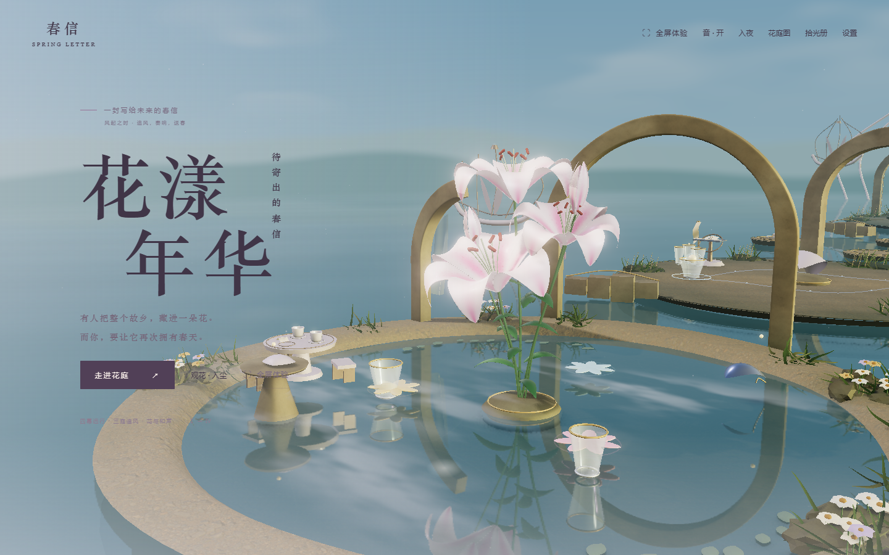
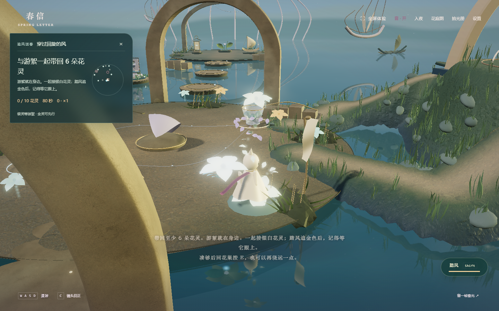
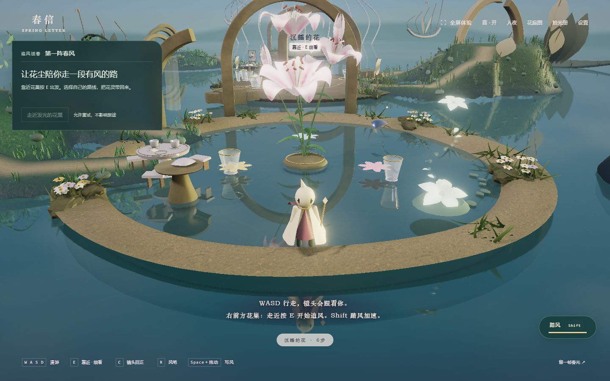
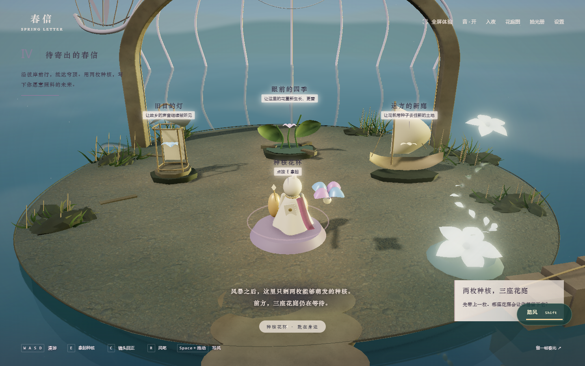

先选一条喜欢的路。
银白花灵走近便可接住，金色花灵要踏风掠过。自由决定接取次序，用金灵补回气息，试着把一段行程连起来。
带回 5 朵就能启程；8 朵全归巢，留下完整和声。

从看花，到和风一起出发
离开花巢，挑一条自己的路线。银白花灵和金色花灵有不同的接取方式；按住 Shift 踏风，气息会慢慢消耗，放缓脚步便能恢复。你可以带够就返航，也可以再绕一程，争取完整和声。
靠近花巢按 E 开始，回到这里再按 E，才把这一程带回的春天留下。连起花灵会得到连奏；一次失误不会夺走已经收下的花灵。
沿着主路，遇见三场新活动
自由选路、等候同行、掌握快慢。完成度越高，巢边留下的花簇越丰盛；最好成绩和最好的花巢模样会留在这台浏览器里，等你下次回来。

银白花灵走近便可接住，金色花灵要踏风掠过。自由决定接取次序，用金灵补回气息，试着把一段行程连起来。
带回 5 朵就能启程；8 朵全归巢，留下完整和声。
小游絮与你同行，银白花灵需要等它靠近再一起接取。你可以踏风先迎向金灵，随后放慢，让它重新跟上。
看一眼同伴，再看前方的风。最快的脚步未必带回最多春天。
银白花灵愿意停在缓行的身旁；金色花冠则一开一合，等它张开，再借一阵踏风穿过。绕路、稍候、加速，都由你决定。
收起一直冲刺的习惯，让这段归途有自己的呼吸。
带够以后，花巢会等你回来；全收集后仍需亲手回巢。超时可以重试，较低的新成绩不会盖掉旧记录。初庭活动与原有花尘练习都能唤醒主路，慢游也有自己的入口。
把声音，写进旅途
钢琴竖琴大提琴长笛
用免费真实乐器录音作为音色，为花庭重新写下一段主题。漫步时留出安静的空隙，追风时加入拨弦的节拍，走到水庭和寄信时，再慢慢收束。
脚步、踏风、接住花灵和种下种核，各自有回应。风、水与稀疏鸟鸣铺在音乐之后；配乐、动作音和环境声可以分别调节。
听一段游戏混音实录
游戏混音实录片段，包含配乐与现场动作、环境声。原创配乐使用真实乐器录音采样；风、水和鸟鸣为合成声景，当前没有人物配音。

走近一点，再看一眼
蓝色晨空拉开远近，暖石带着潮湿的纹理。岸边的细叶草簇有疏有密，小野花从地面长起，水面留下更深的青绿与倒影。
初见时，主花披上粉瓷。参考视频里的月银虹彩仍保留在可选系列里，与你喜爱的花形一起，自由选择。
轻触花心，让它化作花尘；写一阵风，看颜色随花而变，再等它缓缓归形。这份安静的互动，仍在旅途里。
而那封信，还在等你的回答
方舟曾替离乡者保存故乡的季节。你没有经历过他们的旧日，却可以决定怎样照料它留下的春天：让旧灯继续被听见，让新芽再生长，或让花帆带种子去往远方。
两枚种核，三种愿望。
你亲手带去的地方，成为信里的回答。

四幕主路、物件支线、原有探索庭和三封结局回信继续保留。新加入的是这三场可反复游玩的追风活动；它们让归途多一些行动和陪伴，也让最后的寄出有了沿途带回的重量。
0.5.0 · 风起之时
本机入口需先启动游戏服务；下载包解压后，双击「启动春信.cmd」。需要已有 Node.js，游玩素材在本地，无需付费账户。进度保存在当前浏览器。
这是面向桌面浏览器的独立可玩章节：有一条走向结局的旅途，也有可以重玩的庭院活动。场景、角色和动画仍以风格化实时表现为主；单人同行与局部路线选择，尚未扩展为开放世界或长篇冒险。乐器采样编配也有音域和表现层次的限度。
本页图片为游戏画面，声音为游戏混音片段。更细的设计取舍、免费素材来源与当前边界，保存在制作记录中。